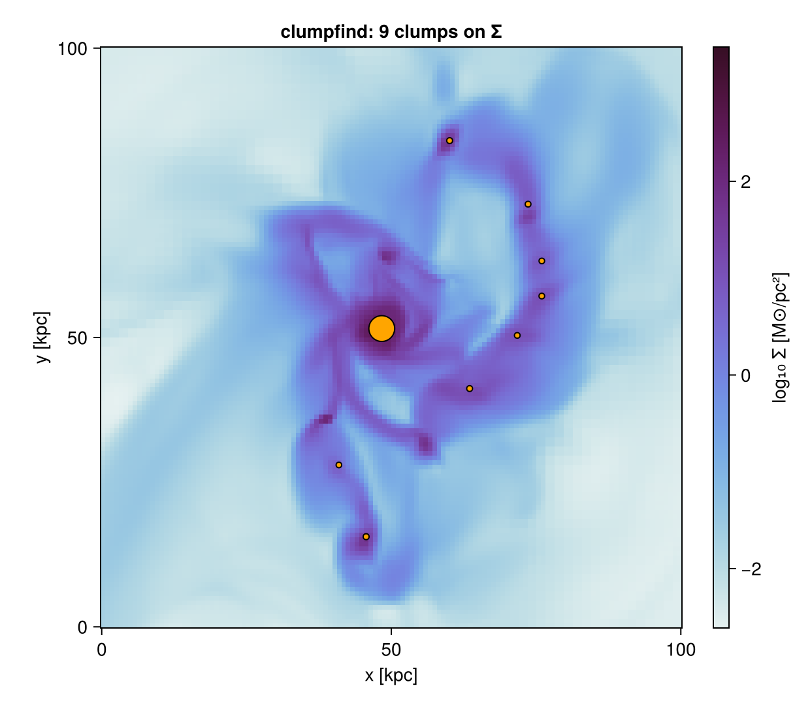
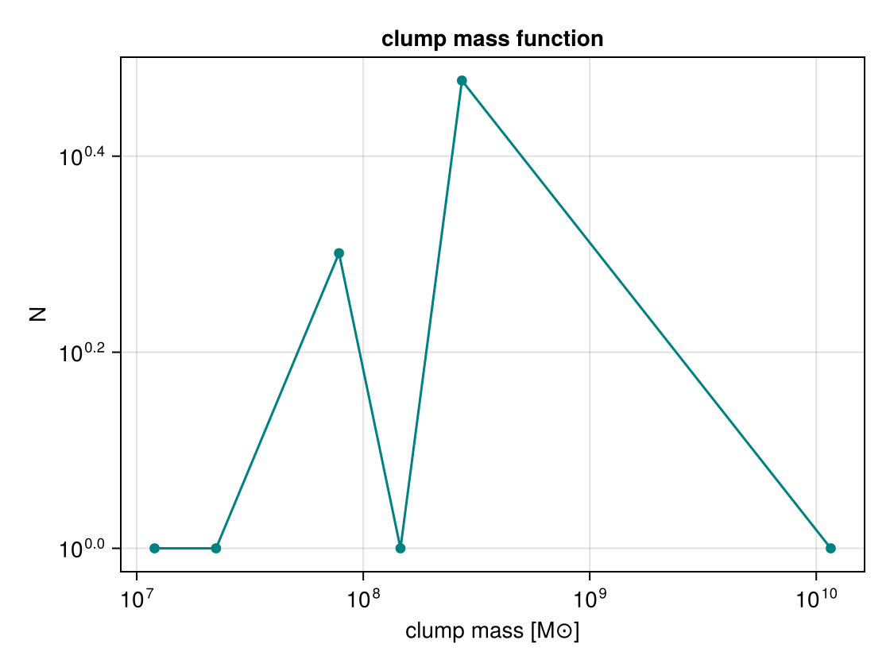

Clump Finding
clumpfind locates connected over-dense structures and returns a per-clump catalog. It works two ways:
- 3D — friends-of-friends on the cells (hydro) or particles above a field threshold.
- 2D — connected-component labelling of a
projectionmap above a threshold.
Both return a ClumpCatalog sorted most-massive-first.
The 3D finder runs on a pluggable framework: an AbstractFinder value (one of seven — ThresholdFoF, DensityWatershed, Dendrogram, GraphSegFinder, HDBSCANFinder, PhaseSpaceFoF, PersistenceFinder) selects the algorithm, while a shared neighbour index, statistics, boundedness and catalog pipeline serves them all. The keyword form clumpfind(obj, field; …) shown throughout this page is a convenience shim that builds a ThresholdFoF for you, so existing scripts are unchanged; pass a finder explicitly to pick the algorithm:
cat = clumpfind(gas, ThresholdFoF(:rho; threshold=1e2, threshold_unit=:nH, linking_length=0.2))
cores = clumpfind(gas, DensityWatershed(:rho; threshold=1e2, threshold_unit=:nH, linking_length=0.4))Choosing a finder
Seven AbstractFinder algorithms plug into the same neighbour-index / statistics / boundedness / catalog pipeline, so they share keywords and outputs and differ only in how cells are grouped. Start with ThresholdFoF; reach for the others when its single threshold isn't enough.
| Finder | Method | Reach for it when |
|---|---|---|
ThresholdFoF | Friends-of-friends above a field threshold (Davis et al. 1985) | The default — fast, robust; isolated clumps over a clear background |
DensityWatershed | FoF connectivity, then watershed split at saddles (DENMAX/SUBFIND); persistence prunes shallow basins | Deblending touching/overlapping peaks inside one connected over-dense region |
Dendrogram | Multi-scale hierarchy (Rosolowsky & Leroy 2008); min_delta peak-to-saddle contrast | You want the nested hierarchy (leaves → branches → roots), not a flat catalog |
GraphSegFinder | Graph segmentation by internal-vs-boundary contrast (Felzenszwalb & Huttenlocher 2004) | Density varies smoothly and no single threshold separates structures |
HDBSCANFinder | Density-based hierarchical clustering, stable-cluster extraction | Clumps span a wide density range / variable background; you'd rather not pick a threshold |
PhaseSpaceFoF | 6-D position+velocity FoF (Rockstar-style; Behroozi et al. 2013) | Kinematically separating spatially-overlapping structures (streams, mergers, substructure) |
PersistenceFinder | Topological persistence / ToMATo (Chazal et al. 2013) | Crowded fields — rank peaks by prominence, robust to noise |
All take the same shared keywords (field, threshold, linking_length, backend, gravitational boundedness, tidal truncation, …); see the Density-adaptive finders and Phase-space & topology sections below for the algorithm-specific parameters.
3D — cells or particles (friends-of-friends)
Cells/particles with field ≥ threshold are linked into a clump when they lie within linking_length (in pos_unit) of one another:
gas = gethydro(getinfo(output, path))
cat = clumpfind(gas, :rho;
threshold=1e2, threshold_unit=:nH, # select cells above 100 cm⁻³
linking_length=0.2, pos_unit=:kpc, # link within 0.2 kpc
mass_unit=:Msol, min_members=5) # keep clumps with ≥ 5 cells
length(cat) # number of clumps
cat[1] # most massive clump (a NamedTuple)With a Makie backend loaded, clumpplot draws the catalog directly — each clump's centre of mass as a marker sized by mass (and coloured by log mass), optionally over a projection background:
using CairoMakie
bg = projection(gas, :sd, :Msol_pc2; center=[:bc])
fig = clumpplot(cat; background=bg) # marker size ∝ mass, colour = log₁₀ mass
A clump is what the finder + threshold define. Two effects are worth knowing:
- Threshold selection. Peaks fainter than
thresholdare not selected at all, and a single friends-of-friends threshold can merge a whole connected over-dense region (e.g. the dense disk) into one clump while leaving fainter arms out. To separate touching peaks, useDensityWatershed(split at saddles, withpersistenceto prune shallow basins) rather than a higherThresholdFoFthreshold. - Boundedness. Detected over-densities are not necessarily self-gravitating. Add
boundedness=trueto get each clump's virial ratioalpha_vir = 2·e_kin/|e_grav|and aboundflag, andbound_only=trueto keep only self-bound clumps. (On a coarse box, many "clumps" are turbulence-supported,alpha_vir ≫ 1, and would be dropped bybound_only.)
Makie also exports a Dendrogram type, so when both are loaded (using Mera, CairoMakie) a bare Dendrogram(...) is ambiguous — qualify Mera's finder as Mera.Dendrogram(...) in that case. The other six finders have unique names.
The same call works on particles (e.g. cluster-finding on stars):
stars = getparticles(getinfo(output, path))
cat = clumpfind(stars, :mass; threshold=0.0, linking_length=0.5)Choosing parameters. linking_length should be a few times the local resolution — comparable to or larger than the finest cell size (3D AMR) or the mean interparticle separation (particles); too small and dense regions fragment, too large and separate clumps merge. threshold sets which material is considered (e.g. a number-density floor for the cold/dense gas). min_members drops noise-sized detections; mask restricts the search to a pre-selected subset.
Gravitational boundedness
boundedness=true adds per-clump energetics (cgs) and keeps, optionally, only self-bound structures:
cat = clumpfind(gas, :rho; threshold=1e2, threshold_unit=:nH, linking_length=0.2,
boundedness=true, bound_only=true)
cat[1].alpha_vir # virial parameter 2·E_kin/|E_grav|
cat[1].bound # E_kin + E_therm < |E_grav|Each clump gains e_kin (COM-frame kinetic), e_therm (thermal, gas), e_grav (binding energy), alpha_vir, and bound. The potential is chosen with egrav: :approx (⅗·GM²/R, fast but biased) by default, :direct (exact pairwise sum up to direct_max members), or :tree (Barnes–Hut octree, O(N log N), accurate at any N). softening (in pos_unit) softens the kernel as 1/√(r²+ε²).
iterative_unbinding=true adds SUBFIND-style unbinding: members with positive total energy in the bulk-velocity frame are stripped iteratively, so each clump's reported mass/membership is its self-bound subset.
cat = clumpfind(gas, :rho; threshold=1e2, threshold_unit=:nH, linking_length=0.2,
boundedness=true, egrav=:tree, iterative_unbinding=true)For watershed deblending, a DensityWatershed finder additionally accepts persistence (in field units): a basin whose prominence (peak − saddle) is below persistence is merged into the deeper basin it meets, suppressing over-segmentation of shallow saddles (Rosolowsky & Leroy 2008 min_delta):
cores = clumpfind(gas, DensityWatershed(:rho; threshold=1e2, threshold_unit=:nH,
linking_length=0.4, persistence=0.3))Deblending overlapping clumps
A single threshold merges touching structures into one friends-of-friends group. deblend splits each group at its density peaks (peaks separated by peak_min_distance in pos_unit):
cat = clumpfind(gas, :rho; threshold=1e2, threshold_unit=:nH, linking_length=0.4,
deblend=:peak, peak_min_distance=0.3) # nearest-peak (also `deblend=true`)
cat = clumpfind(gas, :rho; threshold=1e2, threshold_unit=:nH, linking_length=0.4,
deblend=:watershed) # density-descending basins (respects saddles):peak assigns each member to the nearest peak; :watershed floods the density field from each peak downhill (DENMAX/SUBFIND-style for points, Meyer flooding for 2-D maps), which follows saddles better. Both are mass-conserving (every member/pixel lands in exactly one clump).
Bound-substructure trees
substructure=true builds a two-level tree: each top-level clump is split into density basins (watershed) and the gravitationally self-bound ones (≥ sub_min_members) are attached as nested subclumps. Top clumps gain the boundedness fields too. tidal=true additionally strips each subclump's members beyond its Jacobi radius r_t = D·(m_sub/3·M_host(<D))^{1/3} relative to the host (parent) clump (King 1962; Binney & Tremaine 2008).
cat = clumpfind(gas, :rho; threshold=1e2, threshold_unit=:nH, linking_length=0.4, substructure=true)
cat[1].n_subclumps # number of self-bound subclumps inside the most massive clump
cat[1].subclumps[1].mass # the largest bound subclump's masstidal=:tensor uses the tidal-tensor / Hill radius instead of the Jacobi form: it fits the local gravity acceleration field a(x) (from a gravity object, getgravity) around each subclump to the tidal tensor T_ij = −∂²Φ/∂x_i∂x_j and truncates at r_t³ = G·m_sub / λ_max(T) — exactly the Hill radius R·(m_sub/2M)^{1/3} for a point-mass host. tidal_sample (default 3) sets the fit radius in units of the subclump radius.
grav = getgravity(getinfo(output, path))
cat = clumpfind(gas, :rho; threshold=1e2, threshold_unit=:nH, linking_length=0.4,
substructure=true, tidal=:tensor, gravity=grav)Multi-field — gas + stars + dark matter together
Pass a vector of components to find over-densities across several mass species in one pass. Each component pre-selects its points (with its own field/threshold and an optional mask); the catalog reports a per-component mass/count breakdown per clump:
cat = clumpfind([
(obj=gas, field=:rho, threshold=1e2, threshold_unit=:nH, name=:gas),
(obj=parts, field=:mass, threshold=0.0, name=:stars, mask = o -> getvar(o,:birth) .> 0),
(obj=parts, field=:mass, threshold=0.0, name=:dm, mask = o -> getvar(o,:birth) .<= 0),
]; linking_length=0.5)
cat[1].mass # total mass of the largest structure
cat[1].components.gas.mass # …split by component
cat[1].components.dm.n # dark-matter particle countPass boundedness=true to get the combined-cloud energetics (e_kin, e_therm, e_mag, e_grav, alpha_vir, bound) summed over all species — the self-gravity test uses gas + stars + DM together while the components breakdown stays the per-species mass budget (egrav, softening, iterative_unbinding, bound_only work as in the single-object form).
Mass function & report integration
m, N = clump_massfunction(cat; nbins=20, scale=:log) # differential dN per mass bin
m, Ngt = clump_massfunction(cat; cumulative=true) # cumulative N(≥M)
using CairoMakie
fig = massfunctionplot(cat; cumulative=true) # plot it directly (log–log)
A ClumpCard runs clumpfind inside a First-Look Report (the full catalog is kept in the card's data.catalog):
report(output; path, cards=[ ClumpCard(:hydro, :rho; threshold=1e2, threshold_unit=:nH,
linking_length=0.2) ])2D — a projection map (connected components)
Run it on any projection result to segment a map above a threshold:
sd = projection(gas, :sd, :Msol_pc2; res=512, center=[:bc])
cat = clumpfind(sd, :sd; threshold=50.0, connectivity=8) # regions ≥ 50 M⊙/pc²connectivity is 8 (diagonals count) or 4. For a surface-density map each region's mass is the exact area-integral Σ value · pixel_area; positions are in the map's extent units.
The catalog
Each entry is a NamedTuple; the fields differ slightly between 3D and 2D:
| field | meaning |
|---|---|
id | rank (1 = most massive) |
n_members | cells / particles (3D) or pixels (2D) |
mass | clump mass (3D) or area-integral (2D) |
com | centre of mass — (x,y,z) (3D) or (x,y) (2D) |
peak, peak_pos | maximum field value and its position |
radius | maximum member distance from the COM |
cat = clumpfind(gas, :rho; threshold=1e2, threshold_unit=:nH, linking_length=0.2)
[c.mass for c in cat] # mass function input
cat[1].com # densest clump's centre
cat.meta # the search parameters usedClumpCatalog behaves like a vector (length, cat[i], iteration). For analysis/export, get a columnar table (a NamedTuple of vectors — including boundedness and per-component columns when present), ready for DataFrame / CSV.write:
tbl = clumptable(cat) # (; id, n_members, mass, com_x, com_y, com_z, radius, …)See also getclumps to load a RAMSES-produced clump catalog instead of finding clumps yourself, and Off-axis Projection for tilted maps to segment in 2D.
Multi-scale hierarchy (dendrogram)
A Dendrogram finder returns the finest density peaks (local maxima with prominence ≥ min_delta) as the catalog's leaf clumps; passing hierarchy=true additionally attaches the full merge StructureTree — the level at which leaves join into branches and ultimately roots (Rosolowsky & Leroy 2008):
cat = clumpfind(gas, Dendrogram(:rho; threshold=1e2, threshold_unit=:nH,
linking_length=0.5, min_delta=0.3); hierarchy=true)
tree = cat.tree
length(Mera.leaves(tree)) # finest structures (= the catalog clumps)
r = Mera.roots(tree)[1] # a top-level structure
Mera.children(tree, r) # its immediate sub-structures
r.n_subtree # members in the whole subtreeDensity-adaptive finders
Two further finders handle variable-density fields without a single hard threshold:
HDBSCANFinder— a self-contained HDBSCAN\* (Campello+2013; McInnes+2017): core distances define a mutual-reachability metric whose MST is condensed into a cluster hierarchy, and the most stable clusters (≥min_cluster_size) are extracted. Near parameter-free; points outside any stable cluster are labelled noise (dropped).GraphSegFinder— Felzenszwalb & Huttenlocher (2004) graph segmentation: keeps within-region density variation below the between-region contrast, with a singlescaleknob. Near-linear; a fast multi-scale deblender.
cat = clumpfind(gas, HDBSCANFinder(:rho; threshold=1e2, threshold_unit=:nH,
linking_length=2.0, min_cluster_size=20))
cat = clumpfind(gas, GraphSegFinder(:rho; threshold=1e2, threshold_unit=:nH,
linking_length=1.0, scale=5.0))Finder composition
deblend can be any finder: a cheap finder establishes connectivity, then the deblend finder splits each group — e.g. friends-of-friends connectivity refined per-group by HDBSCAN (something yt cannot do):
cat = clumpfind(gas, ThresholdFoF(:rho; threshold=1e2, threshold_unit=:nH, linking_length=1.0);
deblend=HDBSCANFinder(:rho; threshold=1e2, linking_length=0.5, min_cluster_size=30))Threading
The per-clump statistics/boundedness pass is threaded; max_threads (default Threads.nthreads()) caps it, and the result is identical to the serial output regardless of thread count.
Neighbour backend
Every finder takes a backend for its spatial neighbour search: CellLinkedList (default), HashGrid, or MortonGrid — which visits points along a Z-order (Morton) curve so spatially-near points are near in memory, improving cache locality on large selections (the same ordering an out-of-core path needs). All three return identical results; only speed differs.
cat = clumpfind(gas, ThresholdFoF(:rho; threshold=1e2, threshold_unit=:nH,
linking_length=0.5, backend=MortonGrid))Phase-space & topology
PhaseSpaceFoF— 6-D friends-of-friends (Rockstar-style; Behroozi+2013): points link only when withinlinking_length_posin space andlinking_length_vel(km/s) in velocity, so kinematically distinct populations that overlap spatially — streams, subhaloes, tidal debris — separate. Velocities are loaded automatically.PersistenceFinder— 0-dim persistent homology / ToMATo (Chazal+2013): a peak is kept as a separate cluster only if its prominence (peak − merge saddle) reachespersistence. Principled, parameter-light deblending, robust in crowded fields.
# kinematically separate two overlapping stellar streams
cat = clumpfind(stars, PhaseSpaceFoF(:mass; threshold=0.0,
linking_length_pos=0.2, linking_length_vel=50.0))
# topological extraction by prominence
cat = clumpfind(gas, PersistenceFinder(:rho; threshold=1e2, threshold_unit=:nH,
linking_length=0.5, persistence=0.3))Saving & validation
Persist a catalog (full fidelity — boundedness, nested subclumps, the tree) and reload it:
save_clumps("clumps_out100", cat) # → clumps_out100.jld2
cat = load_clumps("clumps_out100.jld2")clump_recovery scores a found segmentation against a known ground truth (per-point labels), returning the Adjusted Rand Index, completeness, purity and bijective merit — the basis of the validation harness:
m = clump_recovery(found_labels, true_labels)
m.ari # ≈ 1 when the finder recovers the input clumpsAPI
The finder/hierarchy types (AbstractFinder, ThresholdFoF, DensityWatershed, Dendrogram, GraphSegFinder, HDBSCANFinder, PhaseSpaceFoF, PersistenceFinder, StructureTree, StructureNode) are documented in the API reference.
Mera.clumpfind — Function
clumpfind(obj::HydroPartType, finder::AbstractFinder; pos_unit=:kpc, mass_unit=:Msol,
min_members=1, mask=[false], boundedness=false, bound_only=false,
egrav=:approx, direct_max=2000, softening=0.0, iterative_unbinding=false,
deblend=false, peak_min_distance=…, substructure=false, sub_min_members=min_members,
tidal=false, gravity=nothing, tidal_sample=3.0, hierarchy=false,
max_threads=Threads.nthreads()) -> ClumpCatalog3D structure finder driven by any AbstractFinder finder value (one of the seven: ThresholdFoF, DensityWatershed, Dendrogram, GraphSegFinder, HDBSCANFinder, PhaseSpaceFoF, PersistenceFinder; it carries the field/threshold/linking-length and selects the algorithm). Per clump it returns member count, mass, centre of mass com, peak field value and peak_pos, and radius (max member distance from the COM) — positions in pos_unit, mass in mass_unit.
boundedness=trueadds per-clump energetics (cgs):e_kin(COM-frame kinetic),e_therm(thermal, gas),e_grav(binding energy),alpha_vir = 2·e_kin/|e_grav|, and aboundflag (e_kin + e_therm < |e_grav|).bound_only=truekeeps only self-bound clumps. The potential is set byegrav::approx⇒3/5·GM²/R(biased, fast);:direct⇒ exact pairwise sum up todirect_maxmembers;:tree⇒ Barnes–Hut octree, O(N log N), accurate at any N (Barnes & Hut 1986).softening(inpos_unit) softens the kernel1/√(r²+ε²).iterative_unbinding=trueruns SUBFIND-style unbinding (Springel+2001): members with positive total energy in the bulk-velocity frame are stripped iteratively until convergence, so each clump's reported membership/mass is its self-bound subset. Implies the boundedness analysis.deblend=true/:peaksplits merged clumps at their density peaks (members assigned to the nearest peak);deblend=:watershedinstead assigns by density-descending basins. Peaks are separated bypeak_min_distance(inpos_unit). (Equivalent to using aDensityWatershedfinder.)substructure=truebuilds a bound-substructure tree: each top-level clump is split into density basins (watershed) and the gravitationally self-bound ones (≥sub_min_members) are attached as nestedsubclumps(withn_subclumps). Implies the boundedness analysis.tidal(needssubstructure=true) truncates each sub-clump at its tidal/Hill radius in the host:tidal=trueuses the analytic Jacobi radius,tidal=:tensorthe least-squares tidal-tensor radius from agravityobject (getgravity);tidal_samplescales the host sampling region.hierarchy=true(for aDendrogramfinder) also returns the multi-scale merger tree incat.tree(aStructureTree).max_threadscaps the threads used for the per-clump analysis (deterministic regardless of count).
gas = gethydro(getinfo(output, path))
cat = clumpfind(gas, ThresholdFoF(:rho; threshold=1e2, threshold_unit=:nH, linking_length=0.2))
# contrast-controlled watershed + tree-gravity boundedness with iterative unbinding:
cores = clumpfind(gas, DensityWatershed(:rho; threshold=1e2, threshold_unit=:nH,
linking_length=0.4, persistence=0.3);
boundedness=true, egrav=:tree, iterative_unbinding=true)clumpfind(obj::HydroPartType, field=:rho; threshold, linking_length,
threshold_unit=:standard, pos_unit=:kpc, mass_unit=:Msol,
min_members=1, mask=[false], boundedness=false, bound_only=false,
egrav=:approx, direct_max=2000, deblend=false, peak_min_distance=2·linking_length,
substructure=false, sub_min_members=min_members) -> ClumpCatalogConvenience form of the AbstractFinder method: builds a ThresholdFoF from field/threshold/linking_length and forwards every other keyword. Existing scripts keep working unchanged; see the finder method above for the full keyword reference.
gas = gethydro(getinfo(output, path))
cat = clumpfind(gas, :rho; threshold=1e2, threshold_unit=:nH, linking_length=0.2) # 0.2 kpc
bound = clumpfind(gas, :rho; threshold=1e2, threshold_unit=:nH, linking_length=0.2,
boundedness=true, bound_only=true, deblend=true)clumpfind(components::AbstractVector; linking_length, pos_unit=:kpc, mass_unit=:Msol,
min_members=1, boundedness=false, bound_only=false, egrav=:approx,
direct_max=2000, softening=0.0, iterative_unbinding=false) -> ClumpCatalogMulti-field structure finder: pre-select points from several components and link them with a single friends-of-friends pass, so over-densities in gas + stars + dark matter are found together. Each component is a NamedTuple (obj, field, threshold, name [, threshold_unit, mask]); its points with field ≥ threshold (and optional mask(obj)) join the common cloud tagged by name. Per clump the catalog reports total mass, com, radius, member count, and a components breakdown (name=(mass=…, n=…), …) per source.
boundedness=true adds the combined-cloud energetics (e_kin, e_therm, e_mag, e_grav, alpha_vir, bound) computed over all species together (each contributing its own mass and velocity; gas also its thermal/magnetic support), so the bound test uses the full self-gravity of gas + stars + DM while the components breakdown remains the per-species mass budget. egrav, direct_max, softening, iterative_unbinding and bound_only behave as in the single-object form.
cat = clumpfind([
(obj=gas, field=:rho, threshold=1e2, threshold_unit=:nH, name=:gas),
(obj=parts, field=:mass, threshold=0.0, name=:stars, mask = o->getvar(o,:birth).>0),
(obj=parts, field=:mass, threshold=0.0, name=:dm, mask = o->getvar(o,:birth).<=0),
]; linking_length=0.5, boundedness=true)
cat[1].components.gas.mass # gas mass in the most massive structure
cat[1].bound # self-bound across all three species?clumpfind(map::DataMapsType, field; threshold, connectivity=8, min_pixels=1) -> ClumpCatalog2D connected-component finder on a projection map. Pixels with map[field] ≥ threshold are grouped by connectivity (4 or 8). Per region it returns pixel count n_members, mass (area-integral Σ value · pixel_area, exact for a surface-density map), com (value-weighted centroid), peak & peak_pos, and radius — positions in the map's extent units.
Mera.clump_massfunction — Function
clump_massfunction(cat::ClumpCatalog; nbins=20, scale=:log, cumulative=false)
-> (mass, N)The clump mass function. Differential (default): histogram of clump masses into nbins (scale=:log ⇒ log-spaced bins) — returns (bin_centres, counts). Cumulative (cumulative=true): returns (sorted_mass, N(≥M)).
Mera.clump_recovery — Function
clump_recovery(found_labels, true_labels; background=0) -> NamedTupleCompare a found clump segmentation against a known ground truth, label-for-label over the same points. Returns (; ari, completeness, purity, merit, n_found, n_true, n_points):
ari— Adjusted Rand Index (Hubert & Arabie 1985): 1 = perfect agreement, 0 = chance-level, can be slightly negative. The standard clustering-quality metric.completeness— mass/count-weighted fraction of each true clump captured by its best-matching found clump, averaged over true clumps (1 = every true clump is fully contained in one found clump).purity— the same from the found side (1 = no found clump mixes two true clumps).merit— mean bijective meritΣ max_i n_ij²/(|found_i|·|true_j|)(Srisawat+2013 "SUSSING"), rewarding one-to-one matches.
background (default 0) is the label for unassigned points; those points are excluded from completeness/purity/merit (but kept in ari, which scores the full partition). Both label vectors must be the same length and indexed by the same points.
m = clump_recovery(found_labels, true_labels)
m.ari # ≈ 1 when the finder recovers the input clumpsMera.clumptable — Function
clumptable(cat::ClumpCatalog) -> NamedTupleA columnar view of the catalog: a NamedTuple of equal-length vectors — id, n_members, mass, com_x, com_y(, com_z), radius, and (when present) peak, the boundedness columns (e_kin, e_therm, e_grav, alpha_vir, bound), and per-component masses/counts (mass_gas, n_gas, …). Drop straight into DataFrame(clumptable(cat)) or CSV.write.
Mera.save_clumps — Function
save_clumps(filename, cat::ClumpCatalog) -> StringWrite a ClumpCatalog to filename as a JLD2 file (full fidelity — per-clump fields, boundedness, nested subclumps, the hierarchy tree, and meta are all preserved). A .jld2 extension is appended if missing. Reload with load_clumps. For a flat tabular export (CSV/DataFrame) use clumptable instead.
save_clumps("clumps_out100", cat)
cat2 = load_clumps("clumps_out100.jld2")Mera.load_clumps — Function
load_clumps(filename) -> ClumpCatalogReload a ClumpCatalog written by save_clumps.
Mera.ClumpCard — Type
ClumpCard(kind, field=:rho; threshold, linking_length, threshold_unit=:standard, pos_unit=:kpc, mass_unit=:Msol, min_members=1, label="")A report card that runs clumpfind and reports the clump count + total clump mass (the full ClumpCatalog is kept in the result card's data.catalog).